THETA HEALING
A deep transformative process focused on recognizing and releasing subconscious blocks, limiting beliefs and fears. A perfect choice for those who are ready for change.
Gilus transformacinis procesas, skirtas darbui su pasąmonės blokais, ribojančiais įsitikinimais ir baimėmis. Puikus pasirinkimas tiems, kurie pasiruošę pokyčiams.

The sessionSesija
During a session I attentively guide you through releasing subconscious blocks, limiting beliefs and fears.
Sesijos metu atidžiai vedu jus per pasąmonės blokų, ribojančių įsitikinimų ir baimių paleidimą.
In 90 minutes we identify the root cause of your problem and transform the situation using this well-tested and precise method.
Per 90 minučių nustatome jūsų problemos priežastį ir transformuojame situaciją šiuo patikrintu ir tiksliu metodu.
After one session clients notice new pathways and possible choices opening up, which just a few hours ago seemed non-existent.
Po vienos sesijos klientai pastebi atsiveriančius naujus kelius ir galimus pasirinkimus, kurie dar prieš kelias valandas atrodė neegzistuojantys.
The theta waveTeta banga
Theta is a brain wave we reach through a short meditation at the beginning of our session. It helps us access more of what’s hidden in the subconscious while staying fully conscious and alert. Also known as the God wave, we immerse ourselves into this healing energy source — and the magic of healing begins.
Teta yra smegenų banga, kurią pasiekiame per trumpą meditaciją sesijos pradžioje. Ji padeda prieiti prie to, kas paslėpta pasąmonėje, išliekant visiškai sąmoningiems ir budriems. Ši banga dar vadinama Dievo banga — mes pasineriame į šį gydantį energijos šaltinį, ir prasideda gijimo magija.
You can bringGalite atsinešti
- fears
- triggers
- goals
- health issues
- a problem you are facing
- trauma
- baimes
- trigerius
- tikslus
- sveikatos problemas
- iššūkį, su kuriuo susiduri
- traumą
And leaveIr išeiti
- empowered
- relieved
- clear
- understanding
- filled and blessed
- įgalinta(s)
- palengvėjusi(-ęs)
- aiški(-us)
- suprantanti(-is)
- pripildyta(s) ir palaiminta(s)
Sessions · in EnglishSesijos vedamos lietuvių kalba
- Single session€80
- First session with me€60
- 3-session package(€25 discount)€215
- 5-session package(€65 discount)€335
- Vienkartinė sesija€60
- Pati pirma sesija su manimi€45
- 3 sesijų paketas(nuolaida €20)€160
- 5 sesijų paketas(nuolaida €50)€250
*Packages valid for 3 months
*Galiojimas 3 mėnesiai
EmailEl. paštas: gjauniute@gmail.com
WhatsApp: +370 690 29775